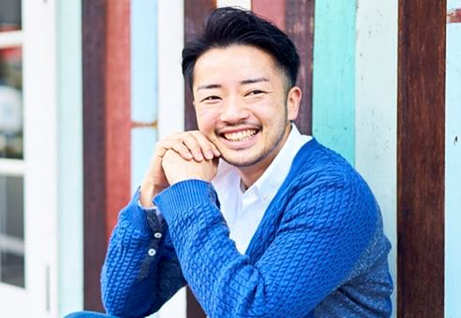

ジェンダー学習会「ダブルハッピネス～ 隣にいるかもしれない LGBTQ ～」を開催します
今くらしの中で、人種や国籍だけでなく、様々な価値観や志向性などを持つ人たちと接する機会も増えています。疎外感の中で知らないうちに距離を置き、息苦しい気持ちになっている人もいるかもしれません。
この学習会では、身近になりつつある性自認の問題をもとに、多様性について考えます。SDGs「ジェンダー平等」（目標５）、「人や国の不平等をなくす」（同10）の目標にもある、ジェンダーにまつわる様々な問題についての理解を深め、誰もがその人らしく生きられる社会のために何ができるか、一緒に考えませんか？
- 開催日時：
- 9月18日（土）受付開始 13：40 14：00～16：30
- 開催方法：
- オンライン（YouTubeライブ配信等）
- 参 加 費：
- 無料
- 講 師：
- 杉山 文野 さん

1981年東京都生まれ。フェンシング元女子日本代表。トランスジェンダー。
早稲田大学大学院教育学研究科修士課程終了。２年間のバックパッカー生活で世界約50カ国＋南極を巡り、 現地で様々な社会問題と向き合う。 日本最大のLGBTプライドパレードである特定非営利活動法人東京レインボープライド共同代表理事や、 日本初となる渋谷区・同性パートナーシップ条例制定に関わり、渋谷区男女平等・多様性社会推進会議委員も務める。 現在は父として子育てにも奮闘中。
募集
３つの参加方法から、いずれかをお選びください
- A：
- Zoomでのオンライン参加（学習会後半に予定している参加者間でのグループトークに参加できます）
- B：
- YouTubeライブ配信視聴（杉山様の講演のみの視聴となります）
- C：
- 後日アーカイブ動画視聴 （開催後１週間、限定配信の動画の視聴となります）
- ※グループトークの定員は200人となります。
申込締切
2021年9月13日（月）18:00
申込方法
専用申込フォーム（下記のURL、二次元バーコードから）
https://forms.gle/iwPsN6AKkQc2QVNK9
- ①お名前（ふりがな）
- ②メールアドレス
- ③連絡先電話番
- ④お住まいの都県
- ⑤ご職業（組合員・役職員・大学生・高校生・他）
- ⑥所属団体・組織・学校名
- ⑦参加方法（A・B・C）
- ⑧ご使用になる機器（パソコン、タブレット、スマートフォン、その他）
- ※いただいた個人情報については、本企画のみでしか使用いたしません。
学習会参加に必要な情報（専用URLや参加にあたってのお願いごと）は開催２～３日前をめどに、入力いただいたメールアドレス宛に配信いたします。メールアドレスの入力間違いにご注意ください。
お願い
通信環境の確認や設定については、各自でのご対応をお願いします。
【共催】
千葉県生活協同組合連合会
埼玉県生活協同組合連合会
神奈川県生活協同組合連合会
東京都生活協同組合連合会
【後援】
千葉県
埼玉県
神奈川県
この件のお問合せは、埼玉県生協連 048-844-8971までお願いいたします。
月～金（10時～16時）土日祝休